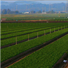

¿Cómo vamos a alimentar tanta gente en 50 años? ¿Cambiaremos los sistemas productivos actuales o nos tocará colonizar Marte?
Monterey County agriculture – copyright © CC BY-SA 2.0 Richard Masoner – flickr.com
Por Alfred Grünwaldt
¿Han pensado que, en algún momento dentro de los próximos cien años, si seguimos nuestra trayectoria actual de consumo de recursos, el hombre tendrá que buscar otra casa diferente a nuestro planeta tierra?
La nueva película que salió recientemente sobre Marte nos da una reseña que la exploración espacial es vista por algunos, como una opción de colonización que podría ser viable antes de lo que imaginamos— y es que, en la última década la población mundial ha crecido en mil millones de habitantes, esto es 100 millones más de personas en el planeta por año.
El crecimiento es exponencial; de acuerdo a la Oficina de Censos de los Estados Unidos, la población pasará a más de nueve mil millones de habitantes a mediados de este siglo, un estimado que podría quedarse corto.
Este crecimiento trae consigo que:
En adición, nuestro clima está atravesando por una serie de cambios que afectaran muchas de las zonas de cultivo actuales. El IPCC indica que por cada grado adicional, por cambio climático, aproximadamente un 7% de la población global estará expuesta a una reducción de, al menos, un 20% en las fuentes renovables de agua; se estima además que para año 2100 habrá, en promedio, por lo menos un grado y medio más de temperatura que en la actualidad.
Varias preguntas resuenan en mi cabeza, ¿vamos a poder alimentar de forma sostenible a una población que sigue creciendo? ¿Tendremos suficiente agua o tendremos que fabricarla como nuestro astronauta solitario en Marte? ¿Habrá suficiente área apta para el cultivo o tendremos que sacrificar lo que queda de bosques? ¿Tendremos que pensar en irnos a otro planeta?
Algunas de las respuestas se las daré a continuación.
Permítanme hablarles sobre tecnologías que están revolucionando los sistemas productivos actuales y que podrían ser el futuro de una agricultura más sostenible a gran escala.
Comencemos por los llamados “rascacielos de frutas” o invernaderos verticales, utilizados hoy en día en el sur de España y en donde más de 50,000 acres alimentan a más de la mitad de Europa. Son sistemas súper eficientes por hectárea cultivada. Si estos sistemas se combinan con técnicas hidropónicas los rendimientos se incrementan aún más. Aún mejor, si esta técnica la combinamos con tecnología adicional representada en estructuras rotativas de varios pisos y con luz para cada nivel estaremos aumentando todavía más los rendimientos.
Vayamos un poco más lejos: cultivos aeropónicos, son la última revolución en Japón. En esta tecnología, la raíz de la planta queda al descubierto en el aire, y es rociada por un spray de precisión utilizando una mezcla de agua y nutrientes, incrementando aún más el rendimiento y la eficiencia en el uso de recursos naturales. Como si esto fuera poco, esta técnica permite que las plantas crezcan más rápido, dado que las raíces tienen que aumentar su área superficial para poder absorber la misma cantidad de nutrientes que con los métodos de siembra estándares.
¿Y si mejoramos el tipo de luz? Algunos trabajos en el Reino Unido y Holanda han demostrado que el reemplazo de la luz solar por fuentes artificiales de energía luminaria como diodos emisores de luz tienen un gran futuro. Es así como se han creado las llamadas “casas rosadas” las cuales hacen uso de los espectros de luz azul y rojo que pueden ser mejor absorbidos por las plantas y que hacen uso de ambientes controlados de humedad y temperatura. En estas casas las plantas son capaces de absorber hasta un 15% de luz. Como consecuencia, crecen 20% más rápido y necesitan aproximadamente un 91% menos de agua y fertilizantes y sin necesidad de herbicidas.
En medio del evento de cambio climático más grande del año la #COP21, amerita y es necesario pensar que además de conciliar en un acuerdo entre los países, también debemos tratar de implementar y/o desarrollar tecnologías que nos ayuden a ser más sostenibles. Sí, es cierto que algunas de ellas requieren todavía algunos años más para que sean rentables, pero nos sirven de base y son los primeros pasos hacia un futuro más sostenible.
Alfred Grünwaldt
Alfred Grünwaldt es especialista sénior en cambio climático y coordinador temático para adaptación del BID. Antes de unirse al BID, Alfred trabajó como consultor en el Departamento de Desarrollo Sostenible de América Latina en el Banco Mundial. Alfred posee un diploma de Ingeniería Mecánica por la Universidad del Norte en Colombia, una Maestría en Mecánica Computacional de Materiales y Estructuras de la Universidad de Stuttgart (Alemania) y una Maestría en Gestión y Planificación Ambiental de la Universidad Johns Hopkins (EE.UU.)
- el 70% del consumo del recurso hídrico es utilizado para irrigación de alimentos,
- nuestra “huella hídrica” es de unos 1,240 metros cúbicos de agua por año por persona y el incremento en la demanda anual promedio del recurso es de unos 64 mil millones de metros cúbicos,
- ya estamos utilizando el 40% de la masa terráquea para producción de alimentos, quedándonos las montañas y zonas desérticas,
- probablemente tengamos que aumentar nuestra producción actual de alimentos en un 70% para alimentar a más de 9,000 millones de almas que poblarán la tierra en el 2050.
Este blog fue publicado originalmente en el blog Hablemos de cambio climático
